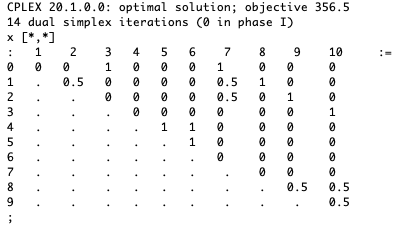
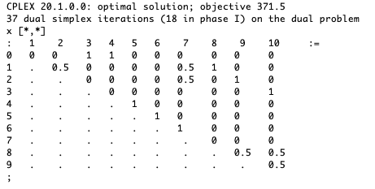
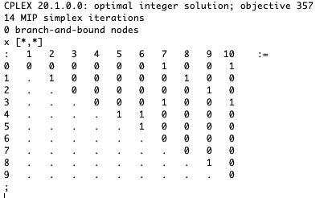
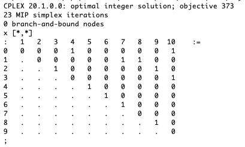

MATP6620/ISYE6760 Combinatorial Optimization & Integer Programming
Homework 1.
Solutions
Due: Thursday, February 4, 2021, by end of day.
Penalty for late homeworks: 10% for each day or part of a day.
This homework is concerned with a symmetric traveling salesman problem on eleven vertices (indexed from 0 to 10), with the costs given in the following table:
You will solve this problem using AMPL and CPLEX. The packages are available on LMS and Box. More on these packages can be found at http://www.rpi.edu/~mitchj/ampldetails.html and also on LMS and in Box.
Solution:
Optimal solution to the relaxation is fractional, so it clearly is not a solution to the TSP, which has binary variables.

for all subsets U ⊆ V of cardinality 3 or 4, where E(U) is the set of edges with both endpoints in U. Show that this still does not give an optimal solution to the TSP.
Solution:
We add the subtour constraints to the model using the lines
Optimal solution to the relaxation is still fractional, so it clearly is not a solution to the TSP, which has binary variables.

Solution:
AMPL output is

This is binary, but not a tour. The solution consists of 3 subtours:
Solution:
We add subtour elimination constraints for U = {4, 5, 6} and U = {1, 2, 8, 9} using the lines
The solution is then

The solution to the relaxation is a tour, so it solves the TSP. Optimal solution is the tour 0 - 4 - 5 - 6 - 7 - 1 - 8 - 9 - 2 - 3 - 10 - 0 with length 373.
A set of n jobs must be carried out on a single machine that can only do one job at a time. Each job j takes pj hours to complete. Given job weights wj for j = 1,…,n, in what order should the jobs be carried out in order to minimize the weighted sum of their completion times?
Solution:
We give 3 different formulations. The first one is quadratic, the second one involves both binary and continuous variables, and the third one requires O(n3) constraints.
Let
Then job i is finished at time ti, with job i the kth completed job:
So total weighted completion time is
The complete formulation is
Let ti be the time at which job i is finished.
Let
We need
Let T = ∑ i=1np i, the time the last job finishes. We then have the formulation
Let
Then the time to finish job j is
This gives the formulation
Note that the triangle constraints xij + xjk + xki ≤2 are necessary to prevent solutions where i is before j, and j is before k, and k is before i. This formulation is a linear ordering problem.
Note that the problem can be solved very simply using Smith’s algorithm:
The more complicated formulations come in to play when there are side constraints, for example precedence constraints.
Solution:
| John Mitchell |
| Amos Eaton 325 |
| x6915. |
| mitchj at rpi dot edu |
| Office hours: Monday and Thursday 1pm–2pm. |
| webex: https://rensselaer.webex.com/meet/mitchj |